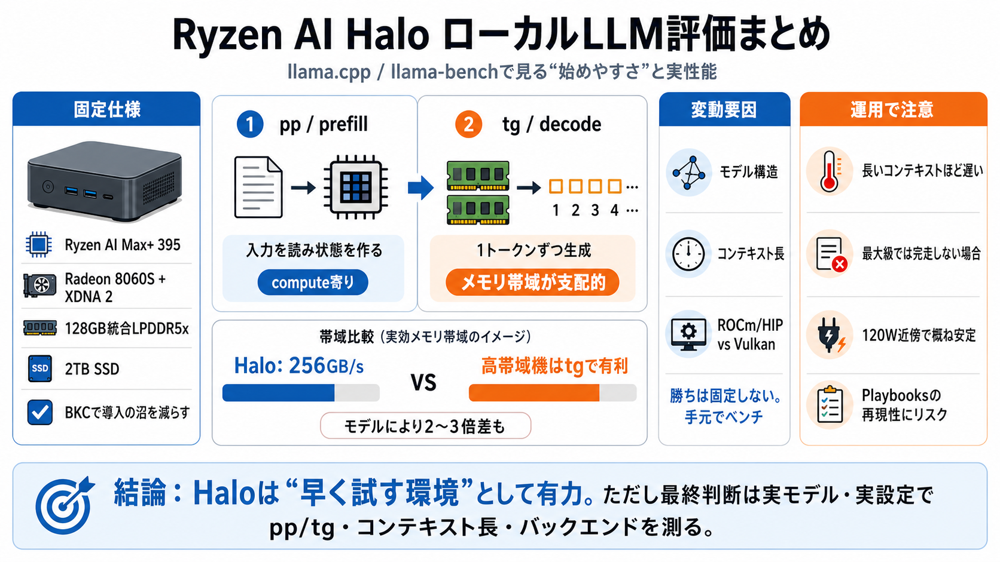

AI Dev Kit, Batteries Included - AMD Ryzen AI Halo | LTT Labs
# AI Dev Kit, Batteries Included - AMD Ryzen AI Halo. The AMD Ryzen AI Halo is a truly mini-PC built around the Zen 5 AM…

# AI Dev Kit, Batteries Included - AMD Ryzen AI Halo. The AMD Ryzen AI Halo is a truly mini-PC built around the Zen 5 AM…
All testing was done on pre-production Framework Desktop systems with an AMD Ryzen Max+ 395 (Strix Halo)/128GB LPDDR5x-8…
# AMD Ryzen™ AI MAX+ 395 Processor: Breakthrough AI Performance in Thin and Light. The AMD Ryzen™ AI MAX+ 395 (codename:…
# AMD Strix Halo (Ryzen AI Max+ 395) GPU LLM Performance Tests. On and off over the past couple months I’ve been doing M…
Performance wise it's competitive with M4 but M4 still has better power efficiency, current AMD AI max laptops have wors…